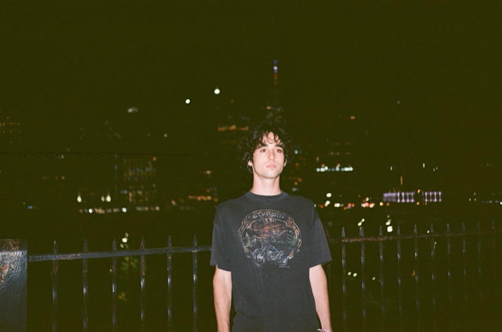

About
Owen Correll is a Los Angeles-born artist and engineering student at New York University, studying Integrated Design & Media with a minor in Studio Art. His work explores the intersection of art, technology, and creative expression, drawing from a wide range of artistic disciplines and mediums.
Outside photography, he is currently exploring game design, video art, and painting.